LaTeX verification/errors
The link to the pdf, which explains all the wrong things happening in the latex generation, can be found here
Task 1: Missing implementations
All the implementations for the different blocks are listed below, but also in the CBD.lib.std module. We explain each block written here right below the code for the block.signal = self.getInputSignal(curIteration)NegatorBlock: This will take the current input signal and makes it negative.
self.appendToSignal(-signal.value)
signal = self.getInputSignal(curIteration)InverterBlock: This will invert the current input signal and output that.
self.appendToSignal(1.0 / signal.value)
signal1 = self.getInputSignal(curIteration, input_port="IN1")AdderBlock: This will add 2 different input signals, we didn't account for more than 2 input signals, as the tests didn't fail. We've also never had the need to use more than 2 inputs.
signal2 = self.getInputSignal(curIteration, input_port="IN2")
self.appendToSignal(signal1.value + signal2.value)
signal1 = self.getInputSignal(curIteration, input_port="IN1")ProductBlock: This will multiply 2 different input signals. We don't multiply more than 2 signals, for the same reason as the AdderBlock.
signal2 = self.getInputSignal(curIteration, input_port="IN2")
self.appendToSignal(signal1.value * signal2.value)
signal1 = self.getInputSignal(curIteration, input_port="IN1")ModuloBlock: We take the first input signal and decide what value it should be when taking it modulo the second input signal.
signal2 = self.getInputSignal(curIteration, input_port="IN2")
self.appendToSignal(math.fmod(signal1.value, signal2.value))
signal1 = self.getInputSignal(curIteration, input_port="IN1")RootBlock: This will take the signal2 root of the first input signal.
signal2 = self.getInputSignal(curIteration, input_port="IN2")
self.appendToSignal(signal1.value ** (1.0 / signal2.value))
signal1 = self.getInputSignal(curIteration, input_port="IN1")PowerBlock: This block takes both signals and takes the first input signal as the base and the second as the exponent.
signal2 = self.getInputSignal(curIteration, input_port="IN2")
self.appendToSignal(signal1.value ** signal2.value)
signal = self.getInputSignal(curIteration, input_port="IN1")AbsBlock: Takes the absolute value of the input signal.
self.appendToSignal(abs(signal.value))
operator = getattr(math, self.getBlockOperator())GenericBlock: This will take one input signal and put the blockoperators result as a function on this signal.
signal = self.getInputSignal(curIteration)
self.appendToSignal(operator(signal.value))
signal1 = self.getInputSignal(curIteration, input_port="IN1")MaxBlock: This will channel the max valued signal to the output. Again we only have 2 input signals.
signal2 = self.getInputSignal(curIteration, input_port="IN2")
self.appendToSignal(max(signal1.value, signal2.value))
signal1 = self.getInputSignal(curIteration, input_port="IN1")MinBlock: This will channel the min valued signal to the output. Again we only have 2 input signals.
signal2 = self.getInputSignal(curIteration, input_port="IN2")
self.appendToSignal(min(signal1.value, signal2.value))
if curIteration == 0:DelayBlock: At last, we implemented the DelayBlock. This block just returns the signal of the previous iteration. In iteration 0 it will return the value of the IC input port.
self.appendToSignal(self.getInputSignal(curIteration, "IC").value)
else:
self.appendToSignal(self.getInputSignal(curIteration - 1).value)
Task 2: Linear Solver
The code for the __isLinear method can be found in CBD.solver.LinearSolver and is written down below. We divided the blocks into 2 types. The LINEAR_BLOCKS determined if a block would is allowed for a linear equation if so then we can continue to check the other blocks in the strongly connected component (scc). The other type was NON_LINEAR_BLOCKS. This type is all the blocks which would make the scc a non-linear equation.
We also have a special block, which is the product block. When we encounter this block, we need to check it's predecessors (the blocks from which the inputs comes), if more than one of the incoming blocks is also in the strong component, then this entire equation can't be linear.
NON_LINEAR_BLOCKS = ["InverterBlock", "LessThanBlock", "ModuloBlock",
"RootBlock", "EqualsBlock", "NotBlock", "OrBlock",
"AndBlock", "SequenceBlock"]
LINEAR_BLOCKS = ["AdderBlock", "NegatorBlock"]
for block in strongComponent:
block_type = block.getBlockType()
if block_type in LINEAR_BLOCKS:
continue
dependent_count = len([dependent_block for dependent_block in
block.getDependencies(0) if
dependent_block in strongComponent])
if (dependent_count > 1 and block_type == "ProductBlock") or block_type in NON_LINEAR_BLOCKS:
return False
return True
Task 3: Derivator and Integrator
Derivator block
When we aren't in iteration 0, we use the formula for calculating the derivative in a point with delta_t. Just as the limit definition states. This happens by the bottom part of the block, without the top 3 blocks. These top 3 blocks are used to get the IC value as output on iteration 0. Because we do not have 2 function values yet.
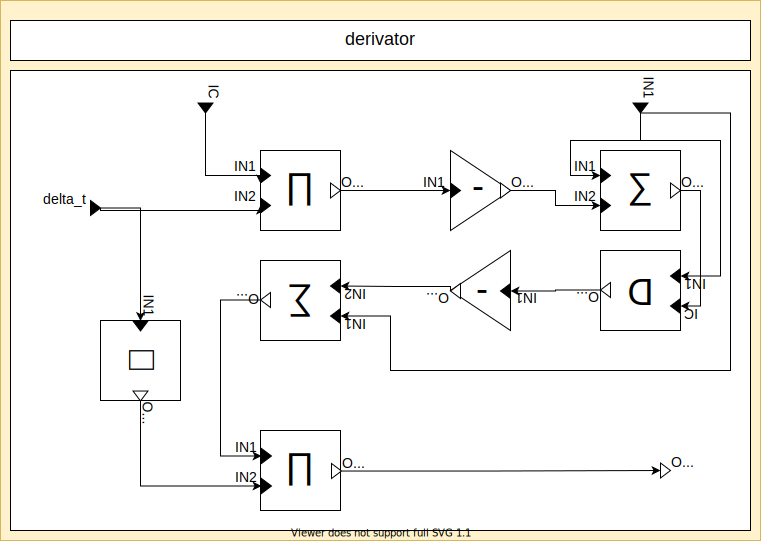Backward Euler
In order to perform the backward euler rule, we initially take the IC as output, we do this by summing the IC with 0. Because this is the backward euler rule, we always need to take the previous function value and multiply it with the current delta_t to retrieve the estimated integral for a delta_t interval at that function value. We get this value from the first delay block, which generates the previous function-value as output.
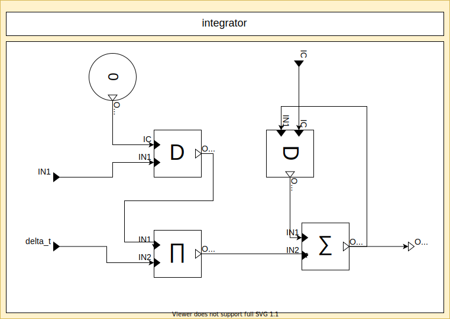Task 4: Factorial
The factorial block is just a block that remembers both the total up until now and the current tick.
We rotated the +1 for extra style points.
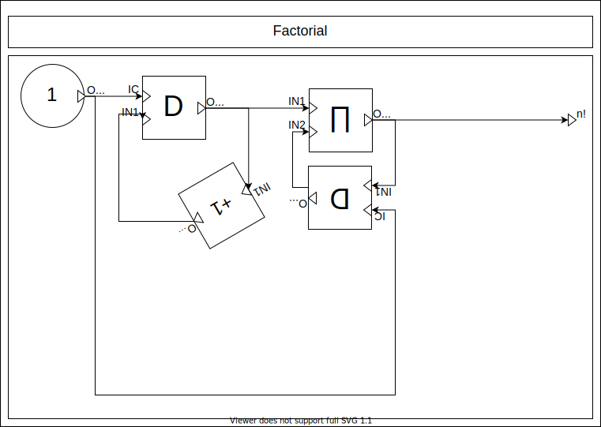Task 5: More integration methods
Simpson integrator
This is the most complicated integrator block of all, we will start with explaining the Simpson block. It is important to notice that this is an incomplete standalone block, meaning it generates wrong outputs for iteration 0 and 1.
The logic itself is quite simply starting with a chain of 2 delay blocks representing F(a), F((b - a) / 2) and F(b), the middle factor is then multiplied by 4 and the whole thing is divided by 6 as the formula dictates.
One interesting detail is the other delay block, our first thought was to be smart about it and not just multiply delta_t by 2 for the interval, but then we realised the formula won't work for dynamic delta_t. We decided to leave it in, because that way it can more easily be checked if that precondition is satisfied.
The root then contains the logic for deciding which integration method should be used and/or accumulated to the total result. The bottom part just calculates both integrals, the top part then computes whether there is an even or odd amount of points. Based on that we multiplex trapezoid on even and simpson on odd points. The exception is on step 1 where we just return IC.
The right part contains logic about 'forgetting' the trapezoid calculation. We can see that sometimes the delay block is set equal to the sum, or the output of itself based on the amount of points.

Trapezoid
The trapezoid block is quite trivial and already covered elsewhere.
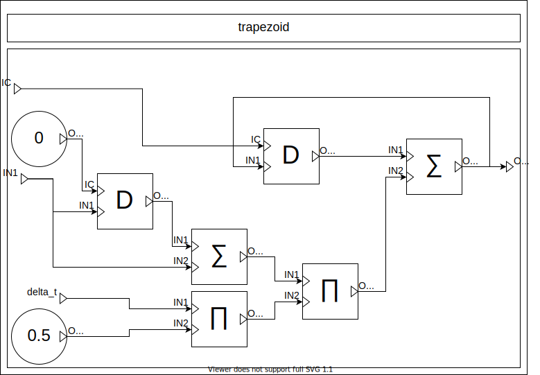Forward Euler
Not much to explain here, a simple accumulator and then the formula.
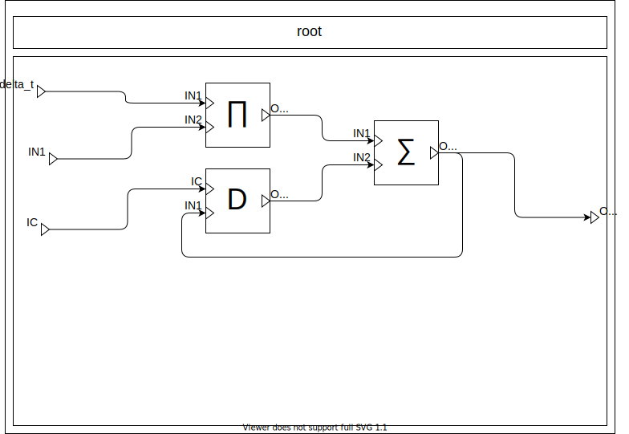Task 6: PRT system
Building the system
The PIDBlock is just a simple implementation of a PID controller, the block consists of the derivation, integral and proportional component, multiplied by their respective parameter and summed together at the end.
The plant block is a little more complicated due to all the parameters. These are all multiplied or divided or negated when necessary. The most important part is the loop back into the integral.
The lookup is just a simple mutliplex chain based on the time.
The root block ties everything together in the same way as the previous assignment.

Experimenting with constant delta_t
These experiments are done using the forward Euler method.
We start by picking a standard delta_t and see the results we would expect.
Using very small delta's does not result in noticeable changes.
When going up in delta we see the velocity getting quite erratic.
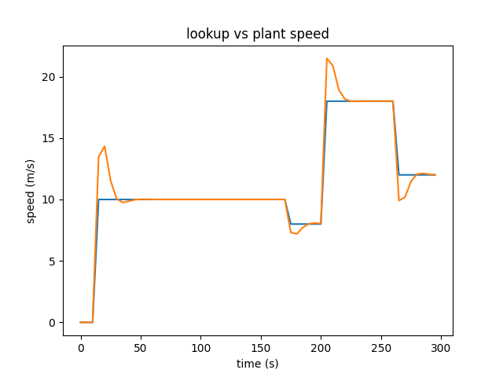At very high delta's the behaviour gets very chaotic oscillating dramatically around the lookup speed.
We also notice that the lookup table is getting very weird as the lines are not vertical anymore.
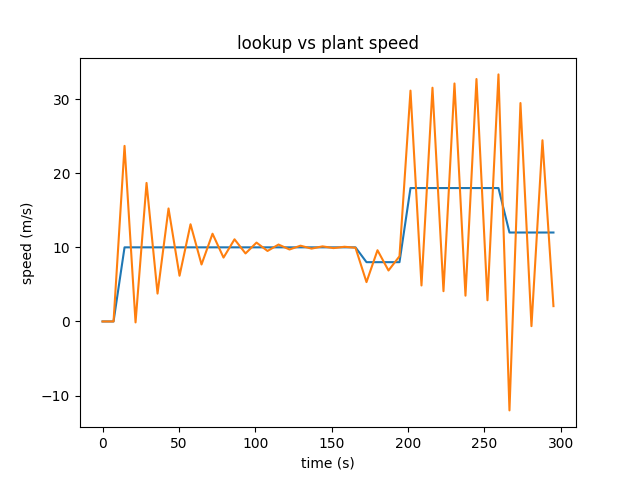Even higher delta's do cause numerical instability causing the graph to spiral out of control
When changing the integration method, we don't see any noticeable differences. The order is, backward Euler, Simpson and Trapezoid.
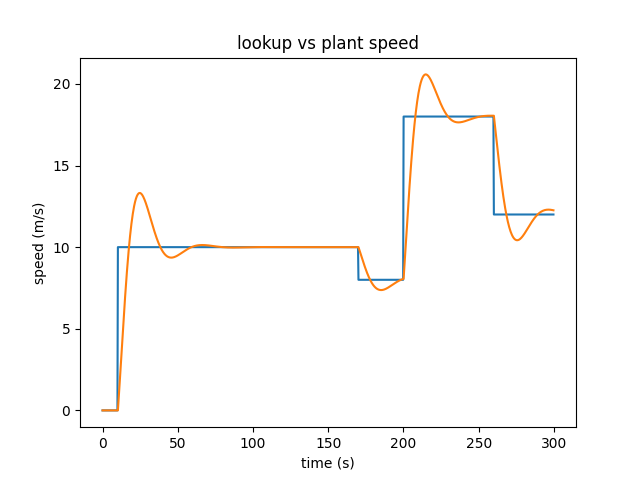Backward euler
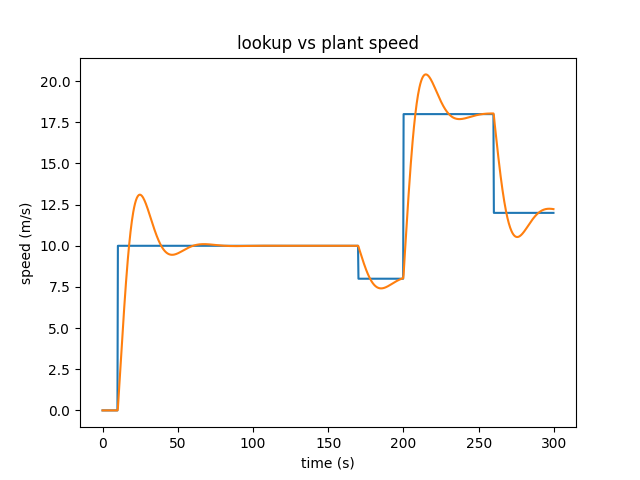Simpson
Trapezoid
Task 7: Runge-Kutta
We already showed that making delta smaller doesn't really change the graph after a certain point. To be very sure though we ran a last experiment on a subset of the time frame using a tiny delta and a small delta. The first image is using delta_t = 0.001 and the second is using 0.1
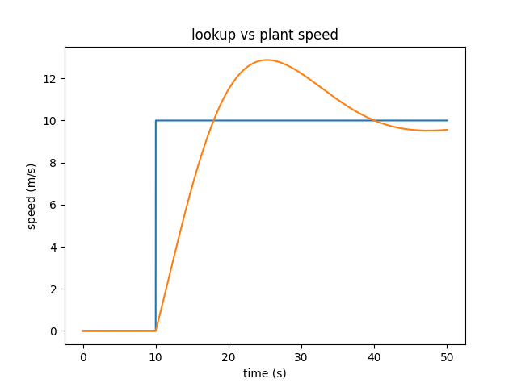 delta_t = 0.001 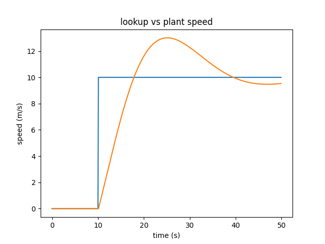 delta_t = 0.1Again we see no noticeable difference. One important detail of using adaptive step size is computation cost. Being smart about this variable can cut simulation costs by orders of magnitude in many cases.
Assignment structure
Our file structure consists of 3 main folders, code, convert and images.
The code contains the whole codebase provided to us along with some modifications in the CBD/lib/std.py and CBD/solver.py. We also added integrator.py for additional implementations of the integrator block. The models that we used can also be found in the std.py file.
The convert folder contains the draw.io -> python library that was given to us. All our draw.io files can be found there.
Lastly, the image folder contains all the images found in the report.